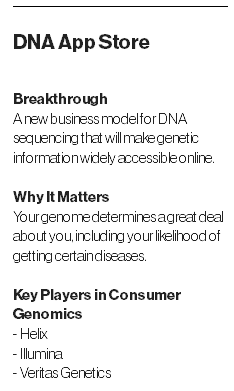

DNA App Store
An online store for information about your genes will make it cheap and easy to learn more about your health risks and predispositions.
While driving and listening to National Public Radio one day, Justin Kao heard about the discovery of a “sweet tooth gene” that makes you more likely to crave sweets. “Oh my God,” thought Kao, who has always loved cookies. “I would pay $5 to know if I had that.”
Kao is hoping that millions of other people will be just as eager to spend a few bucks for tidbits revealed in their DNA. He is a cofounder of Helix, a San Francisco–based company that last summer secured more than $100 million in a quest to create the first “app store” for genetic information.
Our genomes hold information about our health risks, our physical traits, and whom we’re related to. Yet aside from ancestry tests that provide a limited genetic snapshot, there’s not a mass market for DNA data. Helix is a bet by Kao’s former employer, the buyout firm Warburg Pincus, and Illumina, the leading manufacturer of ultrafast DNA sequencing machines, that what’s been missing is the right business model.
Helix’s idea is to collect a spit sample from anyone who buys a DNA app, sequence and analyze the customers’ genes, and then digitize the findings so they can be accessed by software developers who want to sell other apps. Helix calls the idea “sequence once, query often.” (The company says customers will find these apps on websites and possibly in the Android and Apple app stores.)
With its ties to Illumina, Helix thinks it can decode the most important part of a person’s genome—all 20,000 genes and a few other bits—at a cost of about $100, about one-fifth of what it costs other companies. That’s why Helix can afford its second gambit: to generate and store this type of data for all customers, even if they initially make only one specific genetic query—such as whether they have the sweet tooth gene or a risk for a certain disease. Maybe two guys in a garage will write a $10 app that shows you how old you’ll look in 10 years, or which celebrity you are most closely related to. Kao says the tactic will make genetic information available to consumers “at an unprecedentedly low entry price.”
The engine to power the app store is being assembled a mile from Illumina’s San Diego headquarters, in a building where workmen were still bending sheet metal and laying floor tiles in January. Several miles of data cables strung through the ceiling will be connected to a large farm of sequencing machines, able to process the DNA from a million samples a year. Illumina’s CEO, Jay Flatley, also chairman of Helix, has said it could be the largest sequencing center anywhere.
Helix plans to launch the store this year or next. Customers will control their data by deciding who sees it. There’s even a “nuclear button” to erase every A, G, C, and T. But key details are still being sorted out. Will people be able to download their DNA information and take it elsewhere? Probably, though they might pay extra for the privilege.
One company working with Helix is Good Start Genetics, a startup in Cambridge, Massachusetts, that offers pre-conception testing. These DNA tests tell parents-to-be if they share a risk for passing on a serious genetic condition, such as cystic fibrosis. Jeffrey Luber, Good Start’s head of business development, says it hopes to reach a larger audience with an app that can report a few important risks. As with browsing on Amazon, he thinks, people will discover things they “didn’t know they needed but that [are] targeted to them, and that they want.”
A looming question mark is the U.S. Food and Drug Administration, which has kept close tabs on gene tests and will decide how much information Helix apps can reveal. Right now, says Keith Stewart, director of the Center for Individualized Medicine at the Mayo Clinic, most apps that return real medical information—your chance of cancer, say, not just how much Neanderthal is in your DNA—would need agency approval, or at least a doctor in the loop.
“The bottom line is going to be: What are the regulatory constraints on information that is truly useful?” says Mirza Cifric, CEO of Veritas Genetics. His company has been offering since last fall to sequence a person’s entire genome and is creating its own app to explore the data, complete with a button to get a FaceTime appointment with a genetic counselor. Cifric hasn’t decided whether to create an app with Helix, but he says he shares its core belief: “The genome is an asset that you have for life, and you’ll keep going back to it.”